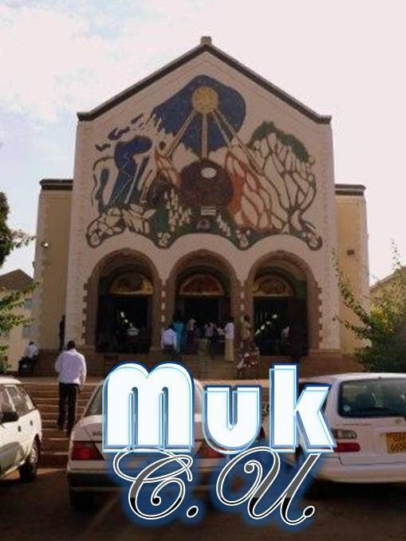

Freshers' Welcome Fellowship
A warm welcome to all new Makerere students. Come meet the MUCU family, worship, and hear God's Word.
I'm AttendingWeekly fellowships, Bible studies, prayer and campus events at Makerere University.
Join us throughout the week for fellowship and the Word. Times and venues are confirmed weekly — follow our Facebook for the latest.
A warm welcome to all new Makerere students. Come meet the MUCU family, worship, and hear God's Word.
I'm Attending
Digging into Scripture together, sharing testimonies, and praying for the campus and nation.
Join Us
Reaching fellow students with the gospel of Jesus Christ across Makerere halls and colleges.
Volunteer
Standing in prayer for Makerere University, Uganda, and the needs of the student body.
Pray With UsJoining students from across Uganda for a national gathering of worship, teaching, and renewal.
Learn More
Equipping MUCU leaders to serve with integrity and lead others to Christ.
RegisterFollow us on Facebook for weekly times, venues, and last-minute updates.
Connect With Us